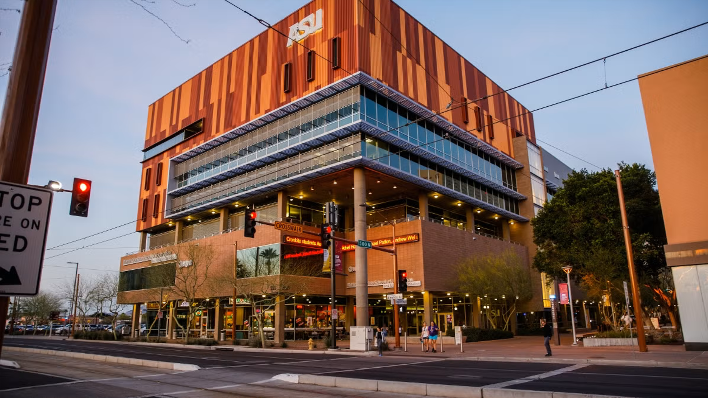
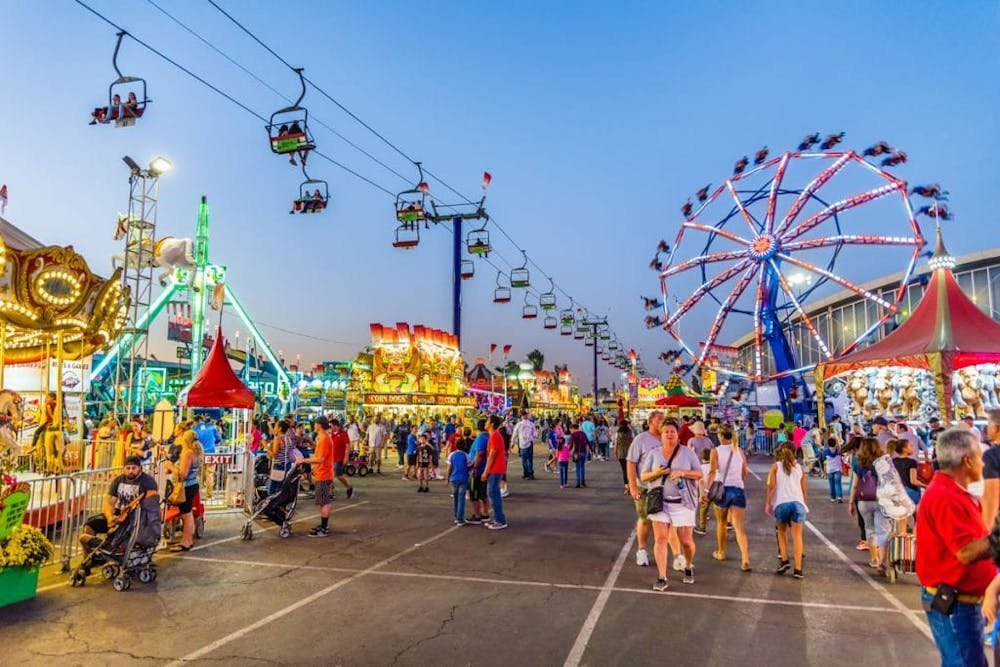

I graduated from Arizona State University in 2021 with a master's degree in Journalism and Mass Communication, where I gained hands-on experience through various internships and roles.
I worked as a digital producer and reporter for Arizona PBS, creating impactful news content while honing my skills in multimedia storytelling. Additionally, I provided graduate-level writing tutoring, helping students refine their theses, dissertations, and more. These experiences equipped me with a strong foundation in digital media and effective storytelling.
Duration
Aug. 2019 - May 2021
Location
Phoenix, Arizona
Journalism & Writing
At ASU, my journalism experience blended innovation with tradition. I helped design and code a news-based video game and turned data spreadsheets into interactive graphics. As a digital producer and social justice reporter for Arizona PBS, I investigated complex issues and translated my work into Spanish to broaden its impact. Beyond the classroom, I wrote for a destination wedding publication and worked as a graduate writing tutor.
Marketing internships & more
Outside of journalism, my internships spanned marketing, PR, visual merchandising, and e-commerce. I crafted promotional content for the Arizona State Fair, designed window displays for a fashion retailer in New York City, and developed e-commerce strategies for a leading bedding manufacturer. Despite challenges of the global pandemic, I was adamant about exploring creative storytelling across both digital and physical spaces.